10 部片单 · 恐怖 / 科幻 / 惊悚 / 悬疑 / 剧情
| # | 片名 | 类型 | 评分 / 状态 |
|---|---|---|---|
| 01 | 黑暗侵袭 | 恐怖 / 生存惊悚（幽闭 + 全女性阵容） | 7.6 / 87% / 71 |
| 02 | 成功的滋味 | 剧情 / 黑色电影（媒体权力与流言） | 7.8 / 98% / 100 |
| 03 | 猎凶风河谷 | 悬疑 / 犯罪 / 剧情（现代西部） | 7.8 / 88% / 73 |
| 04 | 聚焦 | 剧情 / 悬疑（真实事件改编 · 新闻调查） | 8.8 / 97% / 93 |
| 05 | 血色将至 | 剧情 / 心理惊悚（野心与信仰） | 8.3 / 91% / 93 |
| 06 | 犬之力 | 剧情 / 心理惊悚（西部 · 压抑的男性气质） | 7.0 / 94% / 89 |
| 07 | 屏住呼吸 | 恐怖 / 惊悚（密闭空间 · 连续反转） | 7.1 / 88% / 71 |
| 08 | 科洛弗档案 | 科幻 / 恐怖（伪纪录 · 怪兽） | 7.3 / 77% / 64 |
| 09 | 铁血战士 | 科幻 / 惊悚 / 动作（丛林猎杀） | 7.9 / 78% / 47 |
| 10 | 灵动：鬼影实录 | 恐怖 / 伪纪录（低成本现象级） | 6.5 / 83% / 68 |
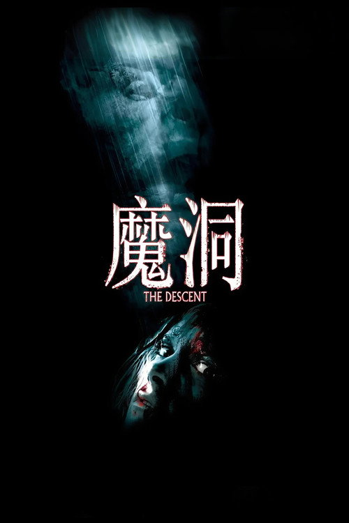
黑暗侵袭 The Descent
「下去了，就未必上得来。」
剧情梗概
莎拉在一场车祸里失去丈夫和女儿。一年后，五个女性朋友为了让她走出阴影，带她去阿巴拉契亚山脉探一个「已经开发成熟」的野洞。第一次下潜顺利，第二天她们转进一条没被标注的通道，岩石塌方封死了来路。她们只能往深处找出路——而深处有东西：不是熊，不是人，是一群在黑暗里退化了一百万年、靠声音捕猎的穴居者。比怪物更早崩掉的，是这支队伍本身：有人隐瞒了这次探洞的真实目的，有人把同伴留在了下面。
亮点
- 尼尔·马歇尔自编自导的第二部长片（前作是狼人片《闪灵战士》），350 万英镑成本、全球票房 5713 万美元。
- 全女性主演阵容在 2005 年是反常规操作，马歇尔的理由很直接：洞穴探险本就更适合女性身形，而且能彻底绕开「谁保护谁」的陈词滥调。
- 怪物（影迷称 crawler）由演员穿硅胶皮套扮演、几乎不用 CGI，设计灵感来自《时间机器》里的莫洛克人。
- 洞内场景在伦敦松林制片厂搭景，苏格兰只用来拍洞口；摄影指导山姆·麦柯迪大量使用手持与头灯光源，几乎没有全景照明。
- 罗杰·伊伯特给四星，称它是「新鲜的、令人兴奋的夏日电影」；拿下帝国奖最佳英国电影与土星奖最佳恐怖片。
- 有两个结局：英国原版比美国版多出最后一场，两版对「她到底有没有出去」给出的是完全相反的答案。
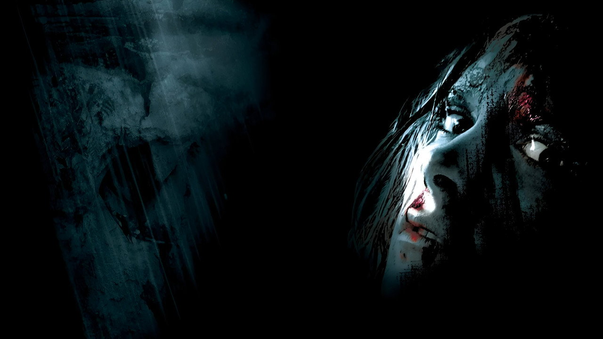
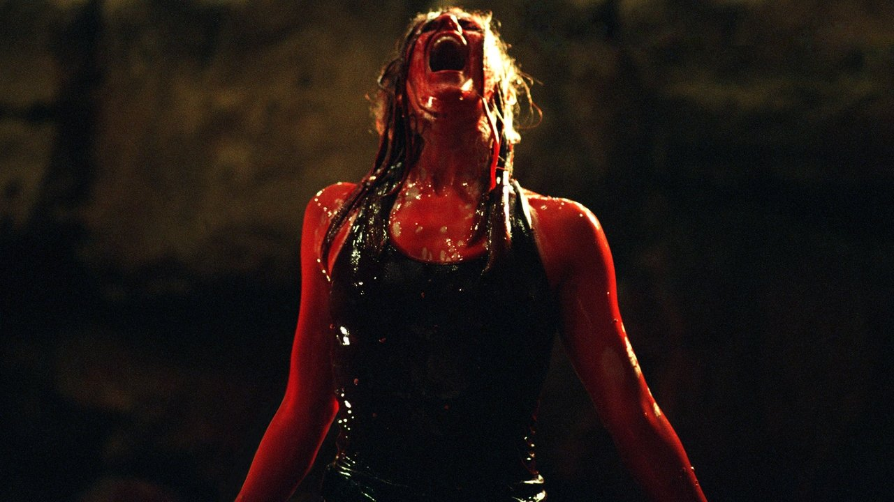
导演与主创 · 他们的历史作品
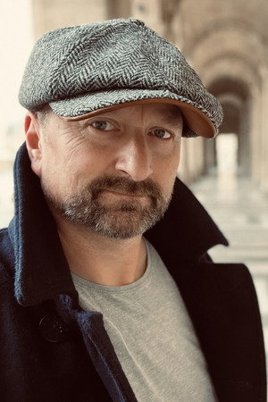
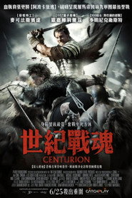
百夫长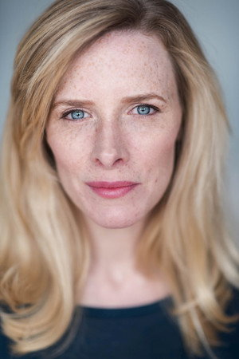
 黑暗侵袭2
黑暗侵袭2 星球大战8：最后的绝地武士
星球大战8：最后的绝地武士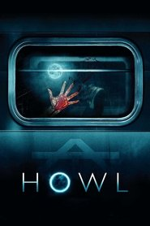
嚎叫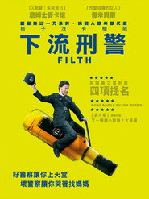
污垢黑暗侵袭2 海滩
海滩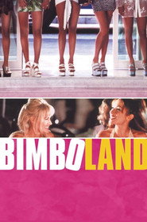
碧波女郎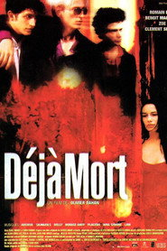
已经死去短评（轻微剧透）
《黑暗侵袭》真正厉害的地方，是它把恐怖拆成了两层，而且两层都做得扎实。第一层是生理性的：窄到只能爬过去的岩缝、头灯照不到尽头的黑、呼吸声被放大到像有人在旁边——马歇尔几乎不给你一个能松口气的宽镜头。第二层是人际的：这支队伍从一开始就埋着雷，莎拉不知道这次探洞是别人替她选的，而领队朱诺身上带着一个说破了就全盘崩塌的秘密。所以等到塌方、怪物出现时，观众心里清楚一件事——她们要防的不只是洞里的东西。轻微剧透：两个版本的结尾是同一个故事的两面。英国版最后那一下，会把前面所有「她快撑住了」的希望全部翻盘：原来她从头到尾都没有离开过那个洞，之前看到的出逃是她给自己编的。美国版剪掉了这一段，故事于是变成幸存者带着愧疚上路。两个都成立，但英国版才是这部片真正想说的——创伤不是你走出去的，是你一直待在里面的。
为什么值得一看
喜欢《异形》《怪形》《无声言证》这类「密闭空间 + 你得自己爬出去」的观众；对幽闭、血腥与突然惊吓有承受力的人。R 级。内地未引进，流媒体可看。
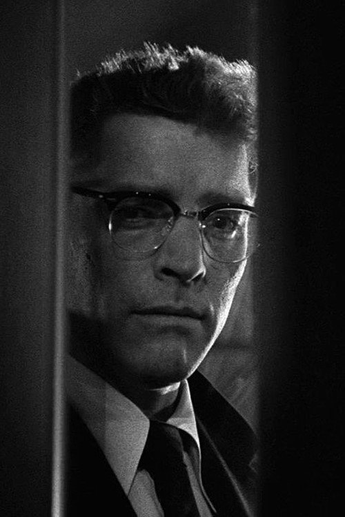
成功的滋味 Sweet Smell of Success
「我一手能捧红你，一手能毁掉你。」
剧情梗概
J.J. 亨塞克是纽约最有权的百老汇专栏作家，一句话能定一个演员的生死。他不容许妹妹苏珊嫁给一个穷爵士吉他手，于是找来靠跑腿和吹捧混饭吃的公关西德尼·法尔科：想办法拆散他们，用什么手段都行。法尔科照做了——栽赃、造谣、借警察的手、把另一个人的前途当垫脚石。他在酒吧、夜总会和报馆之间奔走了一整夜，每一步都更脏一点。天亮时他换来的，是亨塞克专栏里的一小块版面。
亮点
- 亚历山大·麦肯德里克（英国伊灵喜剧《贼博士》《白衣怪客》《荒岛酒池》出身）赴好莱坞后的代表作，也是他最阴郁的一部。
- 剧本由克利福德·奥德茨与恩斯特·莱赫曼改编自莱赫曼自己的中篇小说；台词密度堪称影史顶级，几乎每句都是带刺的双关。
- 黄宗霑（James Wong Howe）摄影，把纽约夜景拍成潮湿、发亮、没有出口的玻璃盒子；埃尔默·伯恩斯坦配乐。
- 伯特·兰卡斯特主动请缨演反派亨塞克（他同时是制片人），托尼·柯蒂斯演法尔科——两个「好人缘明星」同时演两个烂人，是当年最大的反差。
- 上映时被评论骂「太脏」、票房惨败；几十年后进入标准收藏，2012 年入选美国国会图书馆国家影片登记表。
- Metacritic 满分 100，是极少数在该站拿到满分的经典老片之一。
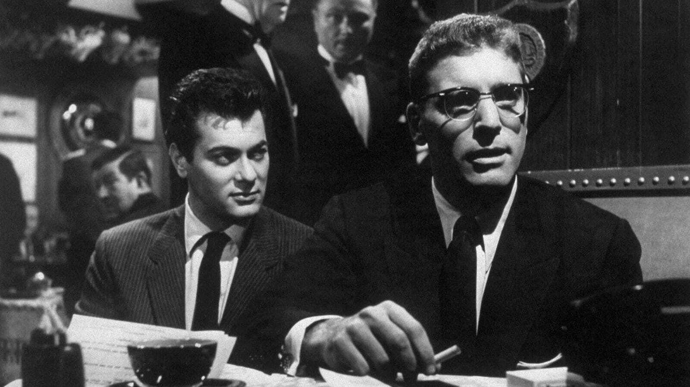
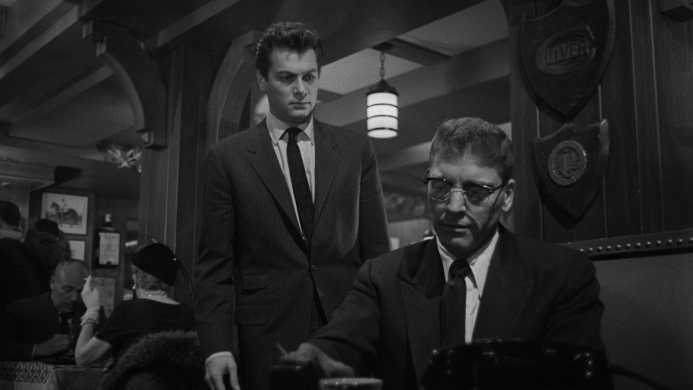
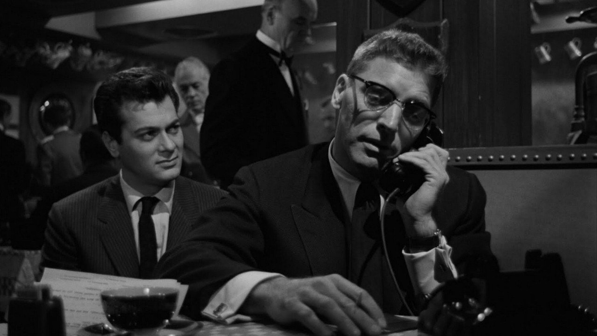
导演与主创 · 他们的历史作品
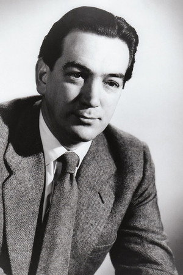
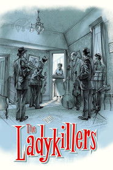
贼博士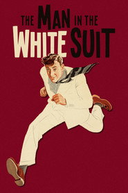
白衣怪客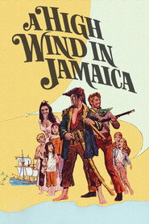
牙买加飓风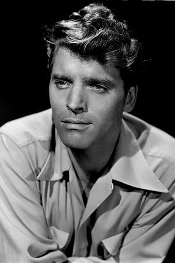
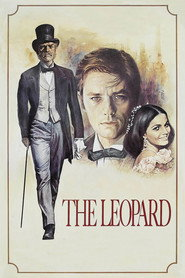
豹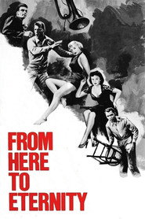
乱世忠魂 国际机场
国际机场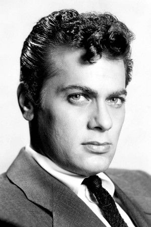
 热情如火
热情如火 斯巴达克斯
斯巴达克斯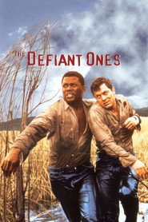
逃狱惊魂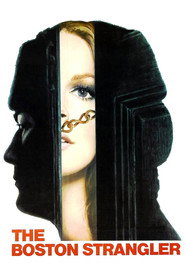
勾魂手短评（轻微剧透）
这部片里没有一个好人，但它不是那种「全员恶人」的炫技。亨塞克和法尔科的关系才是真正的戏核：一个握着权力、连脏活都不用自己动手；一个连尊严都卖掉了，只为换对方专栏里的一行字。麦肯德里克最狠的处理是——他从不让亨塞克动手。所有具体的坏事都是法尔科做的，而亨塞克只需要在餐桌边说一句「我不喜欢那个人」。这就把「恶」从行为挪到了结构：真正烂的不是跑腿的人，是那个有权决定谁该被毁掉、却永远不用碰血的人。轻微剧透：结尾法尔科确实拿到了他想要的版面，但代价是他在所有人面前被拆穿了一次；而亨塞克输掉的是唯一真心待他的人。两人都没有赢，只是各自确认了自己的位置。
为什么值得一看
喜欢《日落大道》《桃色公寓》《彗星美人》这类「行业黑幕 + 台词锋利」的老片；想看黑色电影里最锋利的一组对话的人。无裸露无血腥，但气氛压抑、价值观阴暗。内地未引进，标准收藏 / 流媒体可看。
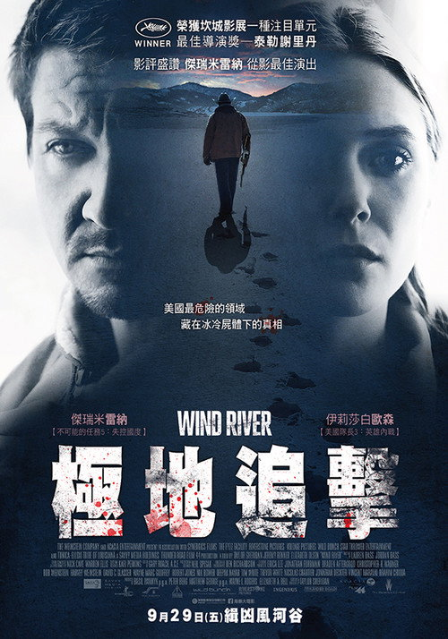
猎凶风河谷 Wind River
「你在找线索，可你漏掉了所有的征兆。」
剧情梗概
怀俄明州风河谷印第安保留地，猎人科里·兰伯特在雪地里发现一具少女尸体——赤脚、在零下二十度跑出了几公里。因为是联邦案件，FBI 派来刚入职的探员珍·班纳，一个对保留地的规则一无所知的外人。两人一个懂雪、一个懂程序，谁也说服不了谁，只能一起往下查。而科里在查案时一直绕着一件事走：他自己的女儿三年前以几乎同样的方式死在同一片雪地里，案子至今没破。
亮点
- 泰勒·谢里丹自编自导，是「美国边境三部曲」（《边境杀手》《赴汤蹈火》《猎凶风河谷》）的收尾作，前两部他只写不导。
- 谢里丹凭本片拿下第 70 届戛纳「一种关注」单元最佳导演。
- 全片在犹他州帕克城实拍，海拔高、气温低，剧组长期在雪地作业；尼克·凯夫与沃伦·埃利斯配乐。
- 片尾字幕写着：美国原住民女性遭到性侵与谋杀的数字从未被官方完整统计——这才是影片真正指向的现实。
- 1100 万美元成本，全球票房约 4500 万美元；杰瑞米·雷纳称这是他职业生涯最重要的表演之一。
- 伊丽莎白·奥尔森的角色是观众的代入入口：她代表「程序」，而程序在这片雪地里基本失灵。
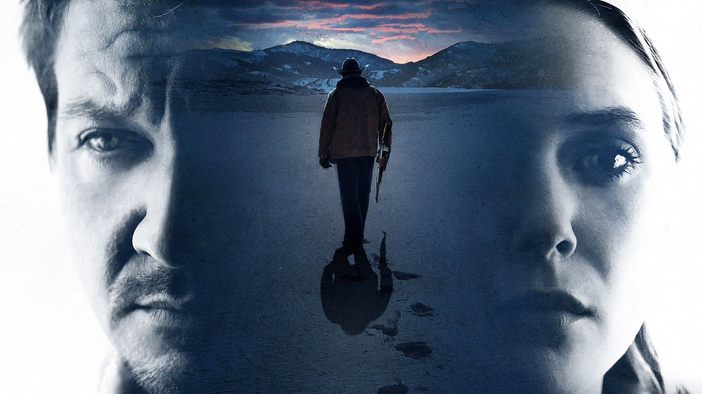
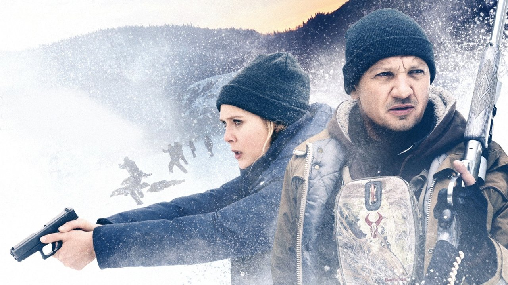
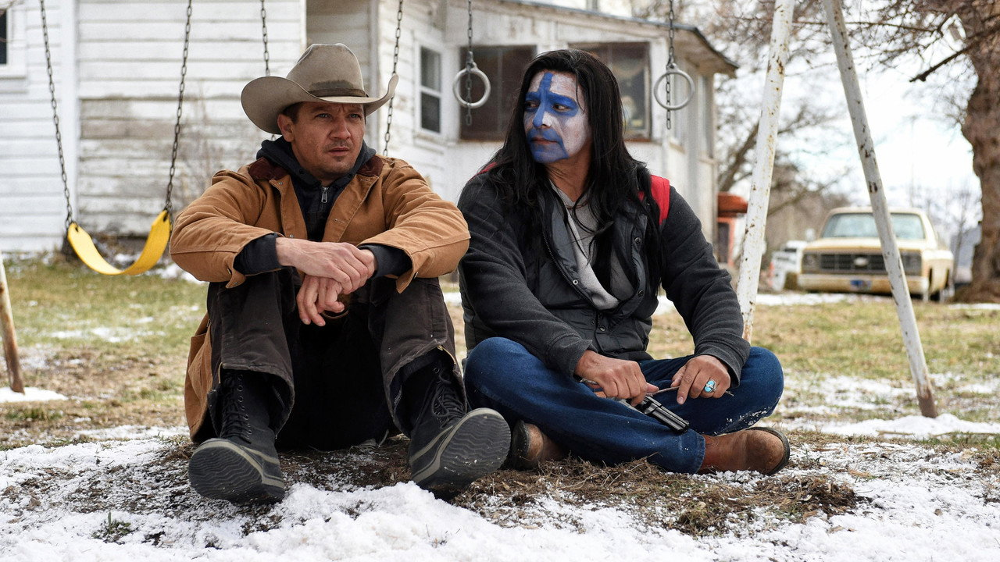
导演与主创 · 他们的历史作品
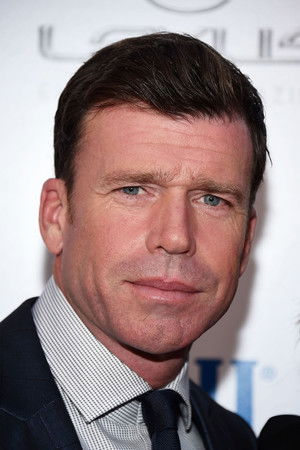
 边境杀手
边境杀手 赴汤蹈火
赴汤蹈火 边境杀手2：边境战士
边境杀手2：边境战士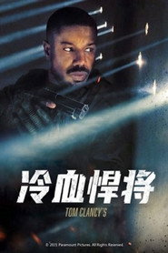
冷血悍将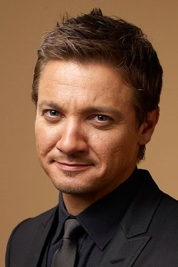
 降临
降临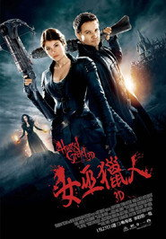
韩赛尔与格蕾特：女巫猎人 复仇者联盟
复仇者联盟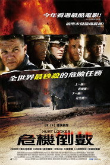
拆弹部队 哥斯拉
哥斯拉 奇异博士2：疯狂多元宇宙
奇异博士2：疯狂多元宇宙 美国队长3
美国队长3 复仇者联盟2：奥创纪元
复仇者联盟2：奥创纪元短评（轻微剧透）
谢里丹很清楚自己在拍什么：这不是一部「找出凶手」的悬疑片——凶手在影片中段就已经呼之欲出了，甚至有一场戏把答案拍得相当直白。他真正要做的是让人看清两件事。第一，这片土地上死一个原住民女孩，系统连登记的意愿都没有；第二，科里不是侦探，他是一个已经失去过一次、所以知道「没人会来查」的父亲。影片最出色的处理是克制：雪地、长镜头、几乎没有煽情的配乐，最后那场枪战来得极快极干脆。轻微剧透：科里最后把那个男人带到了雪地里，让他赤脚跑——和娜塔莉一样。他没有杀他，也没有留他。这一幕的报复感是明确的，但它真正让人难受的地方在于：科里做这件事时，脸上没有任何胜利的痕迹。
为什么值得一看
喜欢《边境杀手》《赴汤蹈火》《赴死之路》这类现代西部与谢里丹式冷硬叙事的观众；能接受性侵、冻伤等沉重议题的人。R 级。内地未引进，流媒体可看。
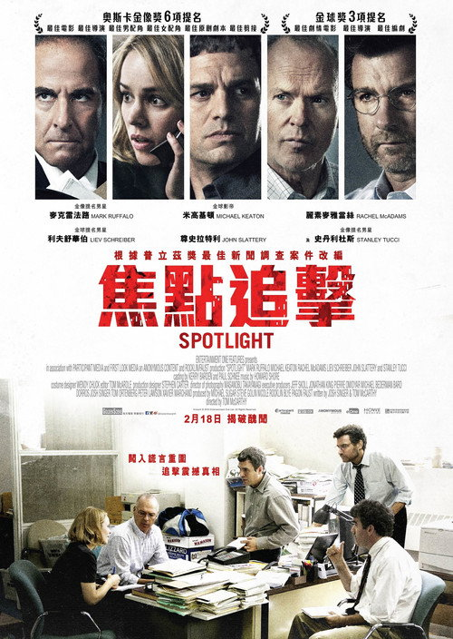
聚焦 Spotlight
「有时候我们会忘了，我们服务的其实是这些人。」
剧情梗概
2001 年，《波士顿环球报》来了新总编马蒂·巴伦。他把一条被压了很多年的线索交给了报社里最不起眼的四人调查小组「聚焦」：一位神父被指控猥亵儿童，案子被教会私下和解掉了。记者们从名单、法院封存文件、受害者互助会一条条往下挖，越挖越不对——不是「几个坏神父」，而是一整套把人从一个教区挪到另一个教区的系统。而这座城市的律师、警察、政客，几乎都知道。
亮点
- 托马斯·麦卡锡与乔什·辛格联合编剧，拿下第 88 届奥斯卡最佳影片与最佳原创剧本（六提二中）。
- 片中报道的原型获 2003 年普利策公共服务奖；影片据真实法庭记录、采访与《波士顿环球报》档案改编，主要人物均有原型。
- 全片没有配乐高潮、没有演讲式独白；麦卡锡把「查案」本身当动作戏拍——敲门、翻档案、等法院解封。
- 迈克尔·基顿演「聚焦」组编辑罗比·罗宾森，马克·鲁法洛、瑞秋·麦克亚当斯、约翰·斯拉特里、斯坦利·图齐与列维·施瑞博尔组成群戏。
- 拍摄地包括《波士顿环球报》旧办公楼、波士顿公共图书馆与芬威球场；后期剪辑历时八个月。
- 全球票房约 9860 万美元；烂番茄 97%（380 条影评），是 2015 年口碑最稳的一部。
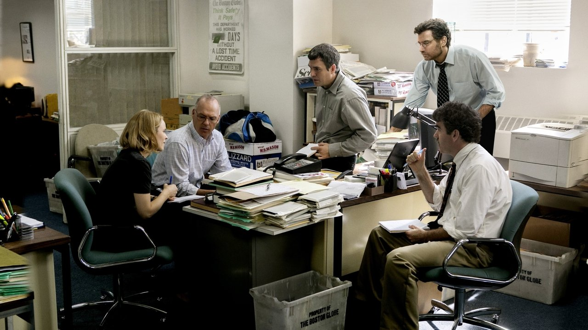
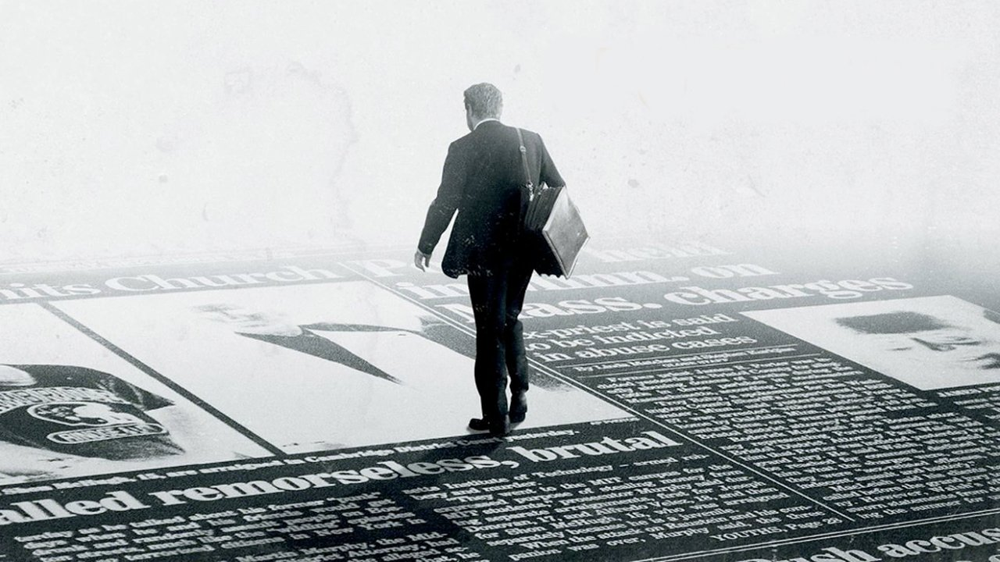
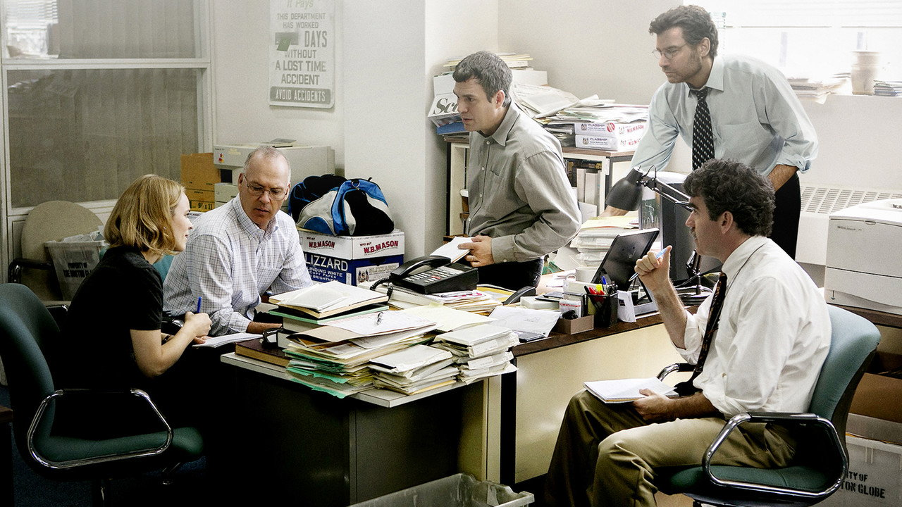
导演与主创 · 他们的历史作品
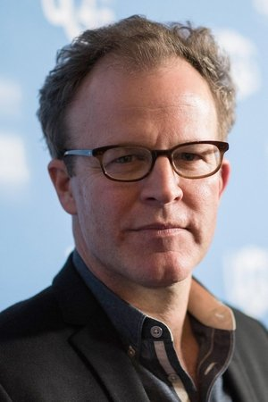
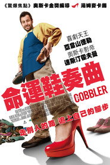
鞋匠人生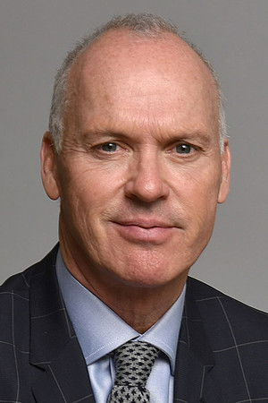
 鸟人
鸟人 蜘蛛侠：英雄归来
蜘蛛侠：英雄归来 蝙蝠侠
蝙蝠侠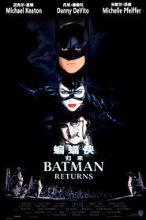
蝙蝠侠归来
 奇异博士
奇异博士 恋恋笔记本
恋恋笔记本 大侦探福尔摩斯
大侦探福尔摩斯 贱女孩
贱女孩短评（轻微剧透）
《聚焦》最聪明的选择是「不煽情」。它没有把记者拍成英雄，而是拍成一群有点笨拙、经常碰壁、在会议室里为「能不能点名」争论半天的人。影片真正的反派也不是某个具体的神父，而是一种弥漫全城的默契——大家都知道，所以没人说。麦卡锡做的是把「调查」这个动作本身拍出节奏：一条线索对上另一条线索、一份封存文件终于解封、一个电话终于有人接。当最后那份名单被整理出来、一个一个名字往报纸上排的时候，观众受到的冲击比任何配乐都大。轻微剧透：影片没有停在「我们揭发了」，而是停在「电话被打爆了」——真正的结局在字幕里：报道之后，全球两百多个城市陆续出现了同类调查。这才是这部片想留下的东西。
为什么值得一看
喜欢《华盛顿邮报》《大空头》《真相至上》这类「制度 + 真相」题材的观众；从事媒体、法律、公共事务的人会更有共鸣。主题涉及儿童性侵，情绪沉重但无直接画面。内地未引进，流媒体可看。
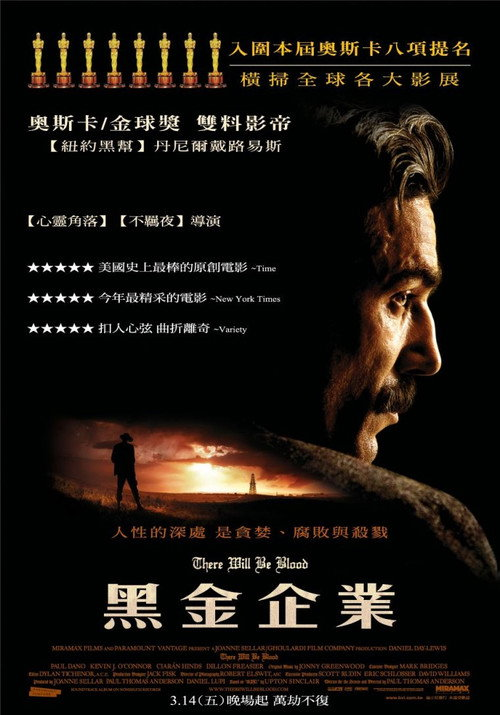
血色将至 There Will Be Blood
「我看着你们所有人，我只想离你们远一点。」
剧情梗概
1898 年，银矿工丹尼尔·普莱恩维尤摔断腿后爬出矿井，手里攥着一块含油的石头。二十年后他成了石油商，走到哪儿都在做同一件事：用一个「家庭男人」的形象骗下地契，再把挡路的人清掉。在小镇小波士顿他遇到了对手——年轻牧师伊莱·桑迪，用宗教控制同一批人。两个人一个握着油、一个握着上帝，谁也吃不掉谁，于是十几年的拉锯开始了。
亮点
- 保罗·托马斯·安德森自编自导，改编自厄普顿·辛克莱的小说《石油！》（辛克莱本人正是揭露石油黑幕的左翼作家）。
- 丹尼尔·戴-刘易斯凭此片拿下奥斯卡、金球、英国电影学院三座影帝；PTA 获柏林银熊最佳导演。
- 全片八项奥斯卡提名，拿下最佳男主角与最佳摄影（罗伯特·艾斯威特）。
- 配乐来自电台司令的强尼·格林伍德——不是西部片音乐，而是一层持续的、让人不安的弦乐噪音。
- 结构上常被拿来和《公民凯恩》对照，但 PTA 把「财富如何吞掉一个人」推进到宗教与资本的双向对立上。
- 那场洗礼戏与结尾的保龄球馆戏，是 21 世纪被引用、被分析最多的两场戏之一。
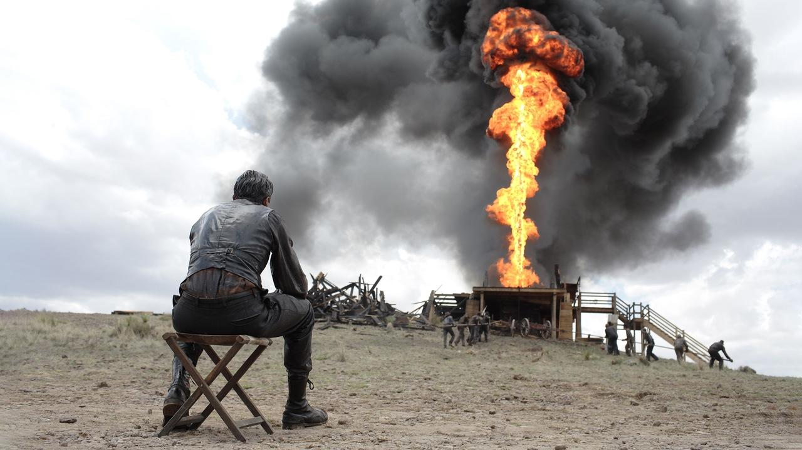
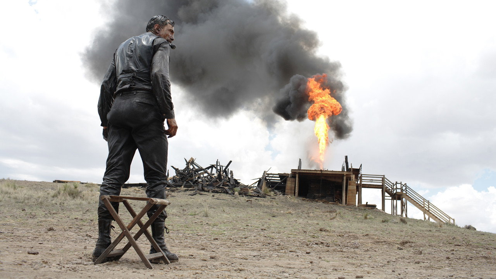
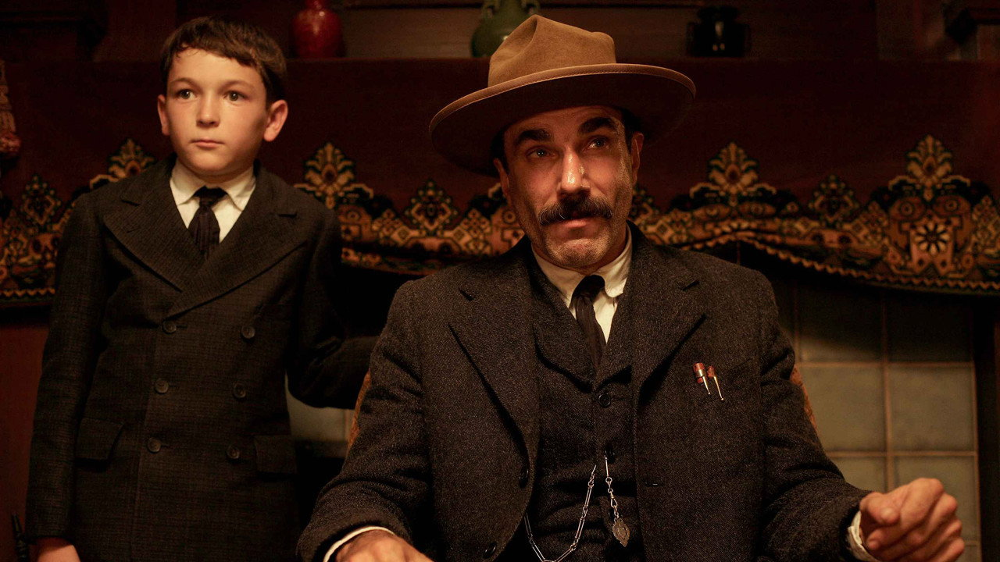
导演与主创 · 他们的历史作品

 一战再战
一战再战 木兰花
木兰花 魅影缝匠
魅影缝匠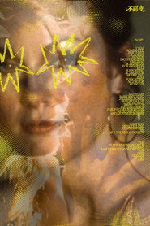
不羁夜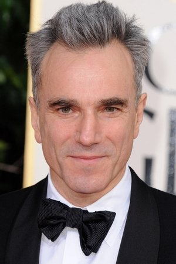
 林肯魅影缝匠
林肯魅影缝匠 纽约黑帮
纽约黑帮 最后的莫希干人
最后的莫希干人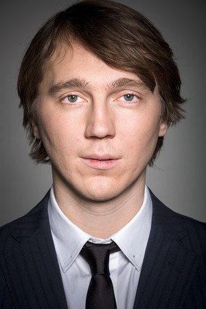
 瑞士军刀男
瑞士军刀男 环形使者
环形使者 新蝙蝠侠
新蝙蝠侠 为奴十二年
为奴十二年短评（轻微剧透）
这是一部几乎没有「好人」的片，但它不是冷血的类型练习，而是一次对「人能把自己彻底榨干到什么程度」的持续逼视。PTA 的厉害在于他从不解释丹尼尔。你不知道他为什么这么恨人，只知道他每次遇到需要「变得像个人」的场合——签地契要装慈父、见弟弟要装兄长、见牧师要装信徒——他都能演得极好，然后立刻把这段关系丢掉。戴-刘易斯演的不是一个恶人，是一个把所有人（包括自己的儿子）都换算成资产的人。轻微剧透：结尾那场保龄球馆戏是全片的答案。丹尼尔赢了，赢得到什么也不剩——他把伊莱打到不再动，然后坐在地上说「我完成了」。这句话不是在炫耀，是在报告一个事实：他终于把最后一样不是资产的东西也清掉了。
为什么值得一看
喜欢《公民凯恩》《美国往事》《老无所依》这类「一个人的膨胀史」的观众；能接受 158 分钟慢节奏与全片无温情的人。R 级。内地未引进，流媒体可看。
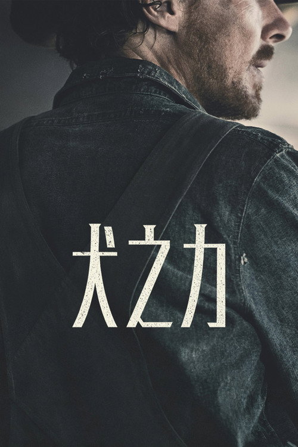
犬之力 The Power of the Dog
「当我父母不在了，我会保护我的母亲。」
剧情梗概
1925 年蒙大拿，伯班克兄弟经营着这片地区最大的牧场。哥哥菲尔粗野、聪明、刻薄，一辈子活在已故搭档布朗科·亨利的阴影里；弟弟乔治温和、迟钝，娶了带着一个儿子的寡妇萝丝。菲尔认定萝丝是来图财产的，于是用尽办法折磨她——包括当着她的面烧掉她儿子彼得做的纸花。彼得是个瘦弱、安静、被菲尔瞧不起的男孩。然后，他开始接近菲尔。
亮点
- 简·坎皮恩自编自导，改编自托马斯·萨维奇 1967 年同名小说；凭此片拿下威尼斯银狮最佳导演。
- 12 项奥斯卡提名（当时女性导演作品的最高纪录），最终拿下最佳导演——坎皮恩成为首位两度获奥斯卡最佳导演提名的女性。
- 全片在新西兰奥塔哥拍摄（替身蒙大拿），摄影指导阿里·韦格纳；琼尼·格林伍德配乐。
- 本尼迪克特·康伯巴奇演了一个反类型牛仔：全程不洗澡、不刮脸、说话故意拖长腔调，手上的活比嘴上的话多。
- 克斯汀·邓斯特凭萝丝获奥斯卡最佳女配角提名；科迪·斯密特-麦菲凭彼得拿下金球奖最佳男配角。
- Netflix 2021-12-01 上线，制作成本约 3900 万美元；上线五天被 120 万美国家庭点播。
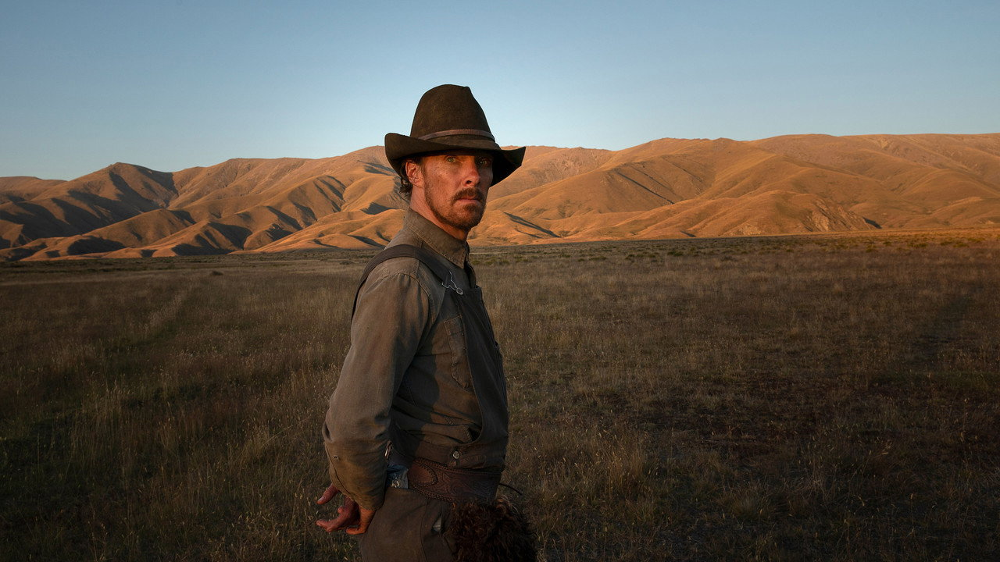
导演与主创 · 他们的历史作品
 奇异博士奇异博士2：疯狂多元宇宙
奇异博士奇异博士2：疯狂多元宇宙 蜘蛛侠：英雄无归
蜘蛛侠：英雄无归 蜘蛛侠2
蜘蛛侠2 蜘蛛侠
蜘蛛侠短评（轻微剧透）
《犬之力》是一部关于「看」的电影：菲尔一直在看彼得，彼得一直在看菲尔，而观众在看完之前很难确定谁在猎谁。坎皮恩最了不起的地方，是她把「压抑」拍成了具体的东西——绳子、手套、纸花、一扇永远半开的门，而不是靠台词解释。康伯巴奇的菲尔是可怕的，但影片给了他一个真实的伤口：布朗科·亨利之死，以及他必须用一生的粗野去守住那段不能被说出的关系。轻微剧透：影片最后十五分钟把前面所有「欺负」的画面重新翻了一遍——彼得接近菲尔不是和解，是计算。而菲尔接过那根绳子时的表情是全片最复杂的一秒：他既是被算计的人，也是终于被「看见」的人。坎皮恩没有给任何道德判断，只让你看着这件事发生。
为什么值得一看
喜欢《钢琴课》《断背山》《燃烧》这类「沉默里全是事」的观众；愿意为氛围和表演等、能接受极慢节奏的人。含动物死亡的残酷画面与强暴力暗示。Netflix 可看。
屏住呼吸 Don't Breathe
「他看不见你。但他能听见你。」
剧情梗概
底特律，三个靠入室盗窃维生的年轻人盯上了一户人家：郊区一栋几乎被城市遗弃的房子，住着一个失明的退伍老兵，传说家里藏着三十万美元现金（女儿车祸身亡后拿到的赔偿）。他们查了门禁、查了作息，觉得万无一失。夜里潜进去，老兵醒了。他动作极快、几乎不出声，一枪打死了一个人。剩下的两个人才发现：这栋房子所有的门窗都被封死了，而地下室里还锁着一个人。
亮点
- 费德·阿尔瓦雷兹自编自导，《鬼玩人》(2013) 是他的成名作，后来执导《异形：夺命舰》。
- 成本不到 1000 万美元，北美票房 8906 万、全球超 1.5 亿美元，是 2016 年投入产出比最高的恐怖片之一。
- 上映首周即登顶北美票房榜，并连续两周第一，把《X特遣队》挤下冠军位。
- 全片主要靠声音设计推进：地板咯吱、呼吸、狗爪子、闹钟——阿尔瓦雷兹把观众的耳朵变成了主视角。
- 史蒂芬·朗（《阿凡达》夸里奇上校）演那个盲人，大部分时间只能靠听与触感表演。
- 剧本的三次反转（谁才是受害者 / 地下室里是谁 / 那笔钱从哪来），是它口碑领先同期恐怖片的关键。
导演与主创 · 他们的历史作品

 鬼玩人
鬼玩人 异形：夺命舰
异形：夺命舰 混沌行走
混沌行走 蜘蛛网中的女孩
蜘蛛网中的女孩 阿凡达：水之道鬼玩人
阿凡达：水之道鬼玩人短评（轻微剧透）
这部片最狠的一手，是它在四十分钟内完成了三次立场对调。开场你同情小偷（底特律、穷、想离开），然后你同情盲人老头（被入侵、被枪指着），再然后你发现老头根本不是受害者——地下室的那个转折把整部片从「入室惊悚」翻成了完全不同的东西。阿尔瓦雷兹的技术优势在声音：一旦主角们决定不发出声音，观众也跟着屏住呼吸，任何一点响动都变成事件。轻微剧透：影片真正的主题不是「别闯空门」，而是「你会为了什么越过那条线」。洛奇要带孩子离开底特律，老头要一个孩子——两个人的动机在同一条走廊里对撞，而导演拒绝给任何一方减刑。最后活着离开的人，带走的不是钱。
为什么值得一看
喜欢《寂静之地》《科洛弗道10号》《无名女尸》这类「密闭 + 高张力」恐怖惊悚的观众；能接受性侵暗示、动物死亡与强暴力的人。R 级。内地未引进，流媒体可看。
科洛弗档案 Cloverfield
「这是我们找到的唯一一份录像。」
剧情梗概
罗布要去日本工作，朋友在曼哈顿给他办送别派对，全程有人拿 DV 在拍。派对进行到一半，整栋楼晃了一下、停电，远处传来一声不像雷的巨响。新闻说「地震」，然后自由女神像的头砸在了街上。几个人拿着那台 DV 从公寓跑到地铁、再跑到军方封锁线，一路拍下去——他们只想找到罗布喜欢的那个人。
亮点
- J.J. 艾布拉姆斯监制、马特·里夫斯执导、德鲁·高达（《林中小屋》导演 / 编剧）写剧本。
- 2500 万美元成本，全球票房 1.72 亿美元；上映前几乎没放出任何物料，只有一支没有片名的预告。
- 全片以手持 DV 视角拍摄，观众直到最后一刻都不知道怪物长什么样——这是当年最有效的营销。
- 片尾字幕里一闪而过的画面，是整个「科洛弗宇宙」（《科洛弗道10号》《科洛弗悖论》）的起点。
- 片名与代号模仿美国国防部档案的命名方式，开场即打出「多处财产，美国国防部」字样。
- 丽兹·卡潘饰演的玛莲娜是全程举着 DV 的人，也是全片唯一的「观众代理人」。
导演与主创 · 他们的历史作品
新蝙蝠侠 猩球崛起2：黎明之战
猩球崛起2：黎明之战 生人勿进贱女孩
生人勿进贱女孩 惊天魔盗团2
惊天魔盗团2 127小时
127小时短评（轻微剧透）
放到今天看，《科洛弗档案》最大的价值不是「伪纪录」这个形式（现在太多了），而是它对视角的诚实：它不给你上帝视角，你只能知道摄像机拍到的那一点。所以巨兽真正露脸的时刻被切成了碎片，反而是地铁隧道里那些小东西更吓人——因为你不知道它们从哪来、有多少。它的缺点也很明显：中段节奏疲、几个角色几乎没塑造，而且它借用了 9·11 的视觉记忆，这一点当年就引发过争议（有人认为是致敬，有人认为是消费）。轻微剧透：最后那卷录像被「美国国防部」归档，镜头一闪，海滩上有个看不清的东西掉了下来——它把这部片从「一场灾难」变成了「一个更大故事的第一页」。
为什么值得一看
喜欢《女巫布莱尔》《死亡录像》《网络谜踪》这类第一人称 / 伪纪录影像的观众；想看「低成本高概念」教科书的人。含大量手持晃动镜头，容易晕的人慎选。PG-13。内地未引进，流媒体可看。
铁血战士 Predator
「如果它会流血，我们就杀得死它。」
剧情梗概
中美洲丛林，一支美军特种小队在达奇少校带领下执行营救任务。他们很快发现事情不对：被剥皮、倒吊在树上的尸体，被清空的游击队营地，队伍里那个 CIA 的人一直在改任务目标。从踏入丛林那一刻起，有个东西一直在树冠上看着他们——它有隐形装置、热成像视野、肩载等离子炮，而且它只猎持枪的人。
亮点
- 约翰·麦克蒂尔南执导（次年拍出《虎胆龙威》），吉姆与约翰·托马斯兄弟编剧；阿诺·施瓦辛格、卡尔·韦瑟斯、杰西·文图拉、比尔·杜克主演。
- 铁血战士由身高 2.18 米的凯文·彼得·豪尔穿皮套扮演，斯坦·温斯顿工作室造偶；隐形效果靠早期光学合成完成。
- 「If it bleeds, we can kill it」「Get to the chopper」都成了英语流行语，后者后来被施瓦辛格本人反复「再用」。
- 全球票房 9827 万美元（成本约 1500 万），并衍生出整个系列与《异形大战铁血战士》。
- 上映当年影评分化明显（Metacritic 仅 47），几十年后口碑反转，被《娱乐周刊》《IGN》列进影史最佳动作片。
- 结尾「泥人 + 陷阱 + 单挑」的段落，是 80 年代动作片里被模仿次数最多的设计之一。
导演与主创 · 他们的历史作品
 虎胆龙威
虎胆龙威 终结者
终结者 终结者2：审判日
终结者2：审判日 终结者：创世纪
终结者：创世纪短评（轻微剧透）
《铁血战士》前四十分钟其实是一部丛林战争片，而且拍得很扎实：队伍里的分工、装备、互相拆台的对话全都立得住。所以等到第一具剥皮尸体出现时，观众已经相信这几个是「能打的人」——这正是后面恐怖感的来源。麦克蒂尔南的天才在于他把「看不见」拍得比「看得见」更可怕：热成像视角、树冠上的咔哒声、开枪之后你不知道打中了什么。轻微剧透：最后达奇能赢，不是因为他更强，而是因为他做了一件整部片里只有他做得到的事——他停止使用装备，把自己埋进泥里，变得不在热成像里。这个设计把 80 年代肌肉片硬生生掰成了「猎人 vs 猎物」的原始对抗，也是它能从一堆同类片里活下来的原因。
为什么值得一看
喜欢《异形》《终结者》《第一滴血》这类 80 年代硬派动作科幻的观众；对节奏要求高、受不了慢热的人也能看（前 20 分钟就进入状态）。R 级。内地未引进，流媒体可看。
灵动：鬼影实录 Paranormal Activity
「你睡着以后，会发生什么？」
剧情梗概
圣迭戈，凯蒂和米迦搬进一栋郊区新房。凯蒂说从小就有「东西」跟着她，米迦不信，于是买了台 DV 架在三脚架上，每晚录下他们睡着以后的画面。前三夜什么都没有。第四夜，门自己动了一下。之后是脚步、撞击、被单被拉走，以及凌晨两点四十三分出现在床边的脚印。米迦越拍越起劲，凯蒂越来越不对劲。
亮点
- 奥伦·佩利自编自导自拍，全片成本约 1.5 万美元，在自己家里用七天拍完；两位演员就是他和当时的室友，角色沿用真名。
- 全球票房 1.93 亿美元——按投入产出比算约 1.29 万倍，是影史上最赚钱的电影之一。
- 先在 2007 年电影节放映，2009 年被派拉蒙买下并大规模公映，靠「点映城市投票」的营销方式扩散。
- 全片没有任何 CGI，鬼魂从不出画；所有效果靠声音、门、灯与固定机位的时间差完成。
- 它直接开启了 Blumhouse 的低成本恐怖片王朝，也带出了六部续作与 2010 年代的「拾得影像恐怖」浪潮。
- 结尾有两个版本，导演剪辑版与公映版给出的是完全不同的收束。
导演与主创 · 他们的历史作品
 潜伏
潜伏 潜伏2
潜伏2 灵动：鬼影实录4
灵动：鬼影实录4 灵动：鬼影实录2灵动：鬼影实录2
灵动：鬼影实录2灵动：鬼影实录2短评（轻微剧透）
这部片在技术上的贡献大于它在电影上的成就，但它确实发明了一种新的吓人方式：不给看。佩利的全部手段就是一台不动的机器、一段持续的时间、和一点点声音——观众必须在画面里自己找异常，而这个过程比任何 jump scare 都更消耗神经。它的缺点同样明显：前二十分钟极其枯燥，两位主演的表演是业余的，豆瓣 6.5 与烂番茄 83% 的落差，正好说明「影评人看重方法、普通观众要结果」这件事。轻微剧透：真正让人记住的不是那些门和脚步，而是最后两场——凯蒂半夜站在床边盯着米迦看了两个小时，以及她被「拖走」时米迦扑向摄像机的那一秒。在那之后摄影机还在录，房子安静下来。
为什么值得一看
喜欢《女巫布莱尔》《死亡录像》《昆池岩》这类伪纪录恐怖的观众；想看「1.5 万美元怎么吓到全世界」的人。含少量血腥与强惊吓。R 级。内地未引进，流媒体可看。